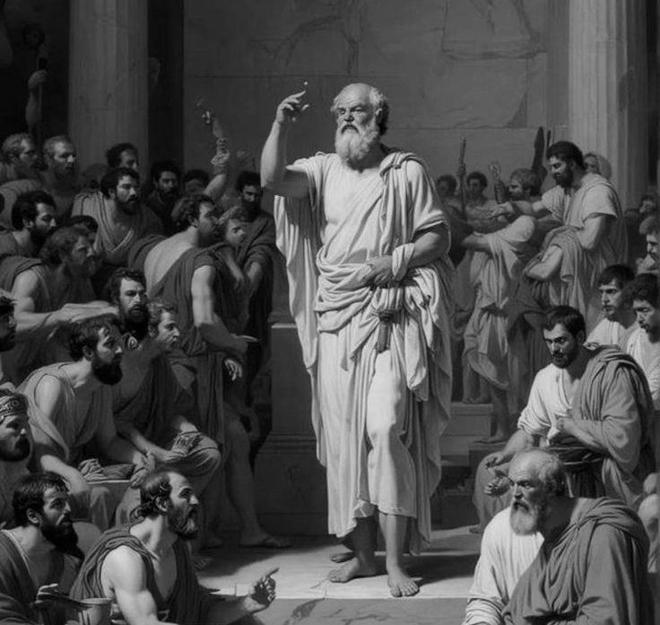

Plato pernah nulis cerita yang lebih ngeri dari yang kita sadar. Ada seorang gembala nemuin cincin ajaib pas diputer, dia jadi tak terlihat. Nggak ada konsekuensi. Nggak ada yang bisa ngawasin. Nggak ada yang bakal tau.

Apa yang dia lakuin? Dia masuk istana, rayu ratunya, bunuh rajanya, dan ngerebut takhta.
Plato nanya lewat cerita ini dan pertanyaannya masih nampol sampe sekarang: kalau kamu punya cincin itu, dan yakin 100% nggak bakal ketauan, apa kamu masih akan “jadi orang baik”?
Coba jujur ke diri sendiri.
Kalau kamu bisa ambil uang di dompet orang tanpa ada yang tau bahkan CCTV mati, bahkan orangnya nggak bakal nyadar kehilangan apa kamu tetep nggak ambil? Kalau kamu bisa selingkuh dan 100% dijamin nggak pernah ketauan seumur hidup, apa kamu tetep nolak?
Buat sebagian besar orang, jawaban jujurnya bikin nggak nyaman. Karena yang selama ini nahan kita bukan “moral” dalam artian murni itu rasa takut ketauan. Takut malu. Takut dihukum. Takut kehilangan reputasi.
Cabut faktor “ketauan” dan lihat apa yang tersisa dari “kebaikan” kamu.
Ini persis argumen yang kita bahas soal moral sebagai insting yang dipoles: moralitas itu bukan cahaya suci dari dalam jiwa. Itu kalkulasi risiko yang udah kita internalisasi sampe berasa kayak “nilai”. Selama ada mata yang mengawasi Tuhan, masyarakat, hukum, bahkan cuma rasa “gimana kalau ketauan” kamu “baik”. Cabut pengawasan itu, dan Cincin Gyges nunjukin siapa kamu sebenernya.
Yang paling nakutin: kamu nggak butuh cincin ajaib buat ngetes ini.
Coba inget momen kamu pernah nyontek waktu yakin nggak ada yang liat. Nge-skip antrean pas nggak ada yang protes. Bohong kecil yang kamu tau nggak bakal pernah ketauan. Setiap momen itu adalah mini Cincin Gyges dan kamu udah jawab pertanyaan Plato lebih sering dari yang kamu sadar.
Tapi dan ini bagian yang bikin Cincin Gyges lebih rumit dari yang keliatan:
Plato sendiri sebenarnya nggak setuju sama kesimpulan “makanya moral itu palsu”. Dia justru pakai cerita ini buat ngebangun argumen sebaliknya bahwa orang yang benar-benar adil akan tetap adil meski nggak diawasi, karena keadilan itu tentang keselarasan jiwa, bukan soal takut hukuman. Buat Plato, orang yang cuma “baik” karena takut ketauan itu justru belum benar-benar bermoral dia cuma nurut.
Jadi Cincin Gyges bukan bukti “moral itu kosong”. Itu justru tes buat misahin orang yang moralnya asli (jalan terus meski nggak ada yang liat) dari orang yang moralnya cuma kepatuhan yang dipoles.
Pertanyaannya balik ke kamu: kalau kamu pake cincin itu apa yang kamu lakuin bakal nunjukin kamu emang punya nilai, atau nunjukin kamu selama ini cuma nurut karena takut?
“Yang menahanmu bukan nilai
tapi kemungkinan ketahuan.”